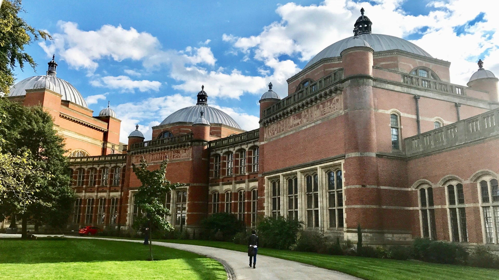

The Intermediate pathway gave me a clear start. Coursework was organised, and I always knew what the next academic step would be.
Learn with a clear academic path — Intermediate, Degree, and Post Graduation — across our campuses in Mumbai, Hyderabad, and Delhi.
Visit to know more
Moi University is built on a simple promise: Foundation of Knowledge. Students move through Intermediate, Degree, and Post Graduation with the same academic structure on every campus.
From Mumbai and Hyderabad to Delhi, the aim is the same — clear pathways, focused teaching, and a campus community that stays with you through each stage of study.
Visit to know moreChoose the qualification that matches where you are in your academic journey.
Undergraduate programmes that form the core of study at Moi University, building on a strong Intermediate foundation.
A structured introduction to higher study, preparing students for degree-level coursework with clarity and support.
Advanced academic study for graduates who want to continue into specialised learning after their degree.
The same educational pathways, available through campuses in three cities.
A closer look at the places where Intermediate, Degree, and Post Graduation pathways are taught.
The university network and academic pathways we serve.
Read what learners say about each stage of study.
Voices from learners on the pathways we offer.
The Intermediate pathway gave me a clear start. Coursework was organised, and I always knew what the next academic step would be.
Degree study at the university felt focused. The campus community made it easier to stay consistent through the year.
Post Graduation here is about depth. I could continue from my degree without losing the academic structure I already knew.